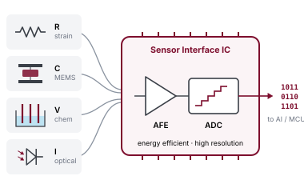
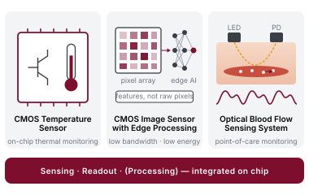
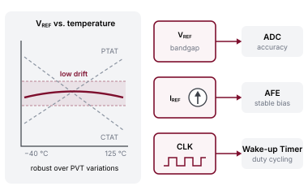

Every sensor—a strain gauge, a MEMS accelerometer, an electrochemical cell, or a photodiode—produces a small electrical signal that must be digitized before any algorithm can use it. For a given sensing device, the readout circuit largely determines the accuracy of the whole system. We develop energy-efficient analog front-ends (AFEs) and data converters for resistive, capacitive, voltage, and current sensors, and co-design the interface with MEMS transducers to collect richer information per unit energy.

Demand for highly integrated sensors is growing rapidly, from thermal management of processors to machine vision and health monitoring, where compact sensing nodes must deliver information rather than raw data. We integrate sensing, readout, and processing into single-chip or tightly packaged systems, including CMOS temperature sensors with low-cost trimming, image sensors with near-sensor processing that cut data bandwidth and energy for edge AI, and miniaturized blood flow sensing systems for point-of-care use.

Behind every precise measurement are building blocks the user never sees: voltage references, current references, and on-chip clocks. Their stability over PVT sets the accuracy of an ADC, the bias of an AFE, and the timing of duty-cycled sensor nodes. We design ultra-low-power, low-drift references and energy-efficient oscillators that let complete sensing systems run accurately without external components or costly calibration.
As the technology landscape evolves, these topics may be updated from time to time in line with our group’s research goals.